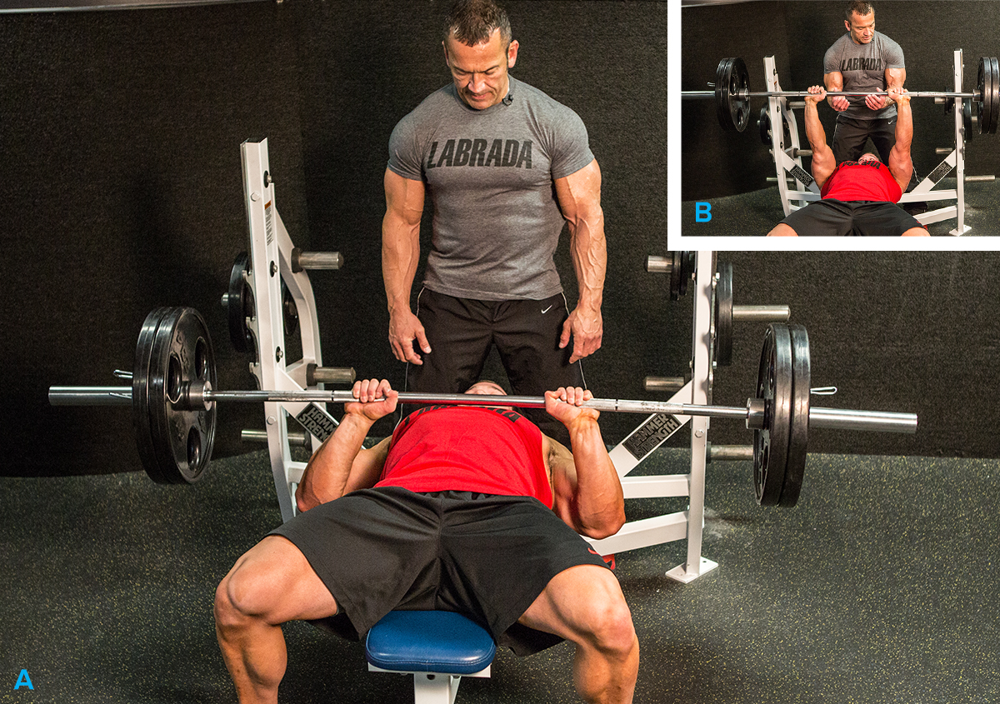
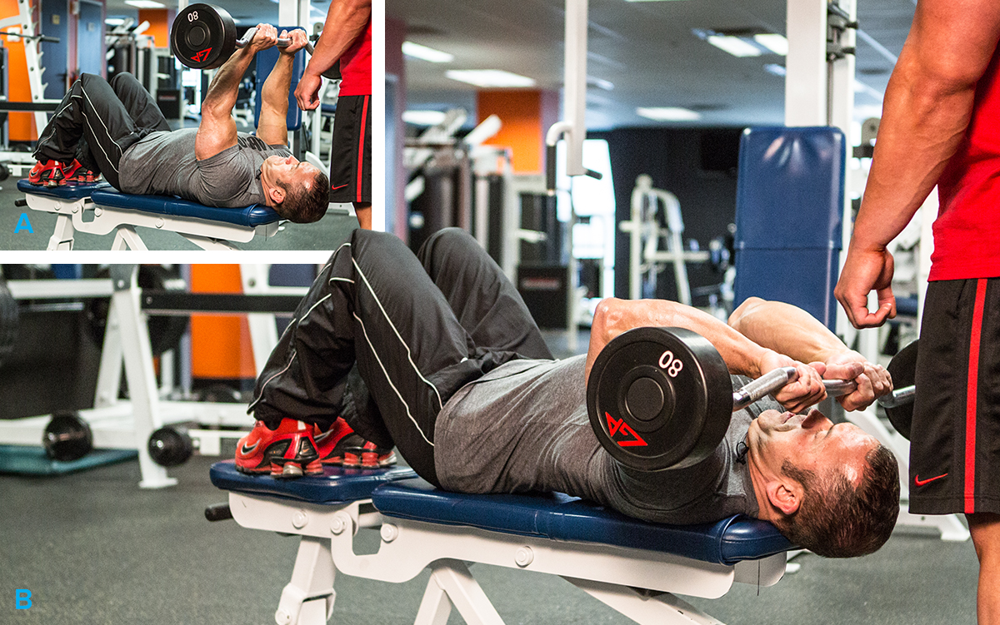
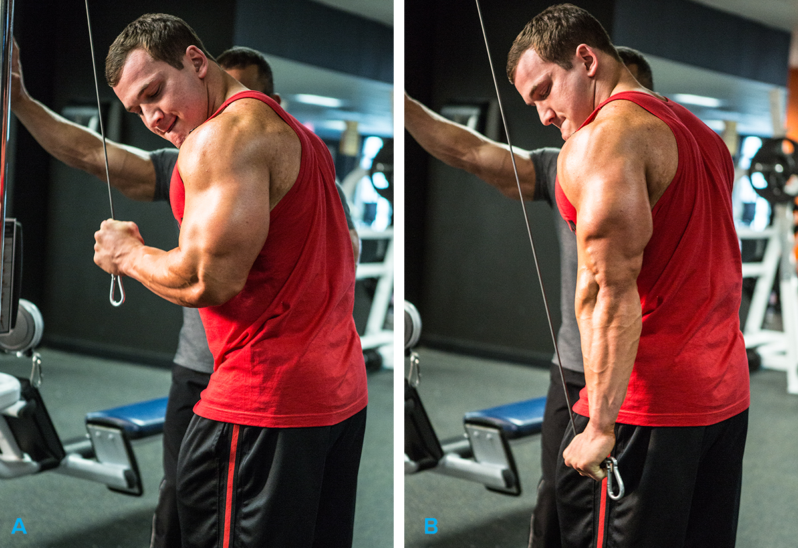
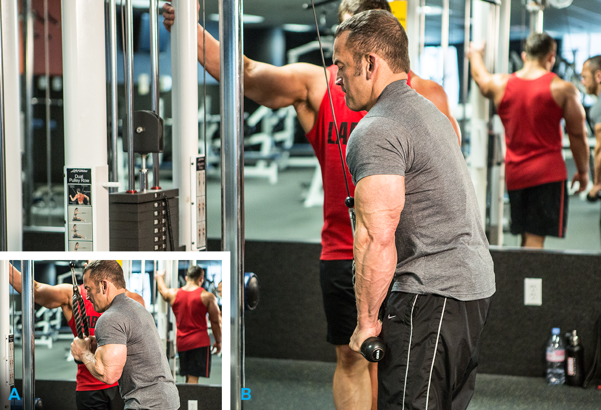
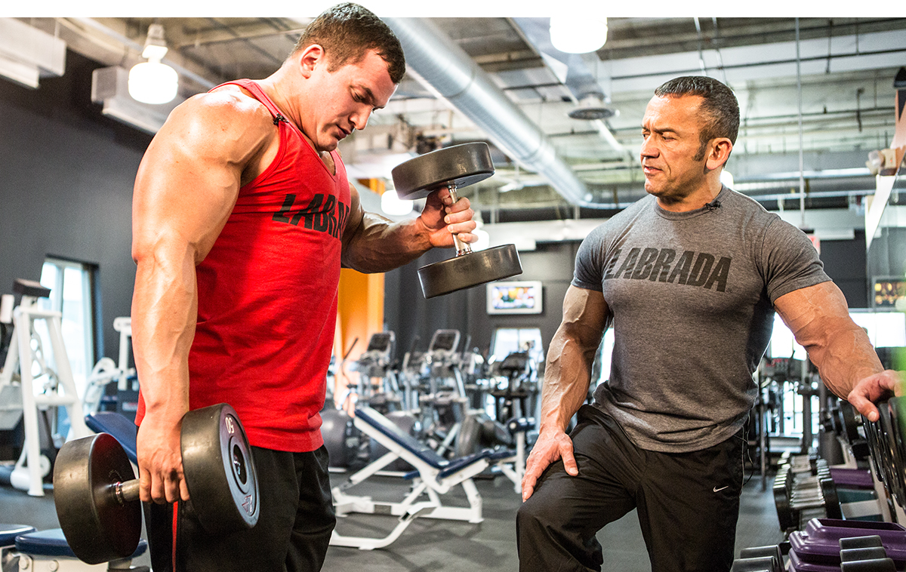
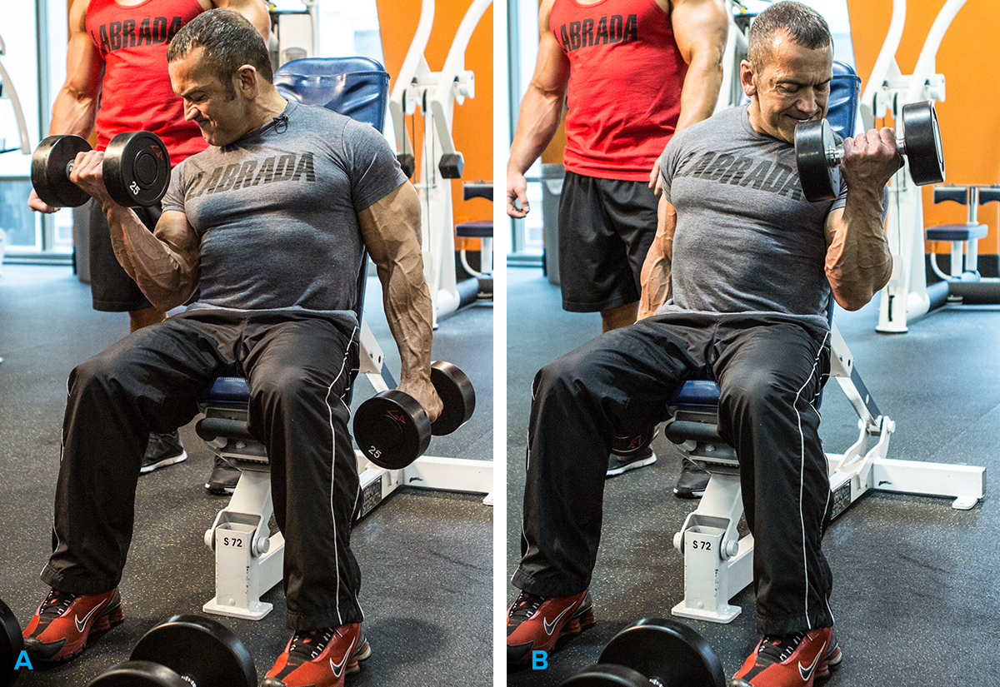
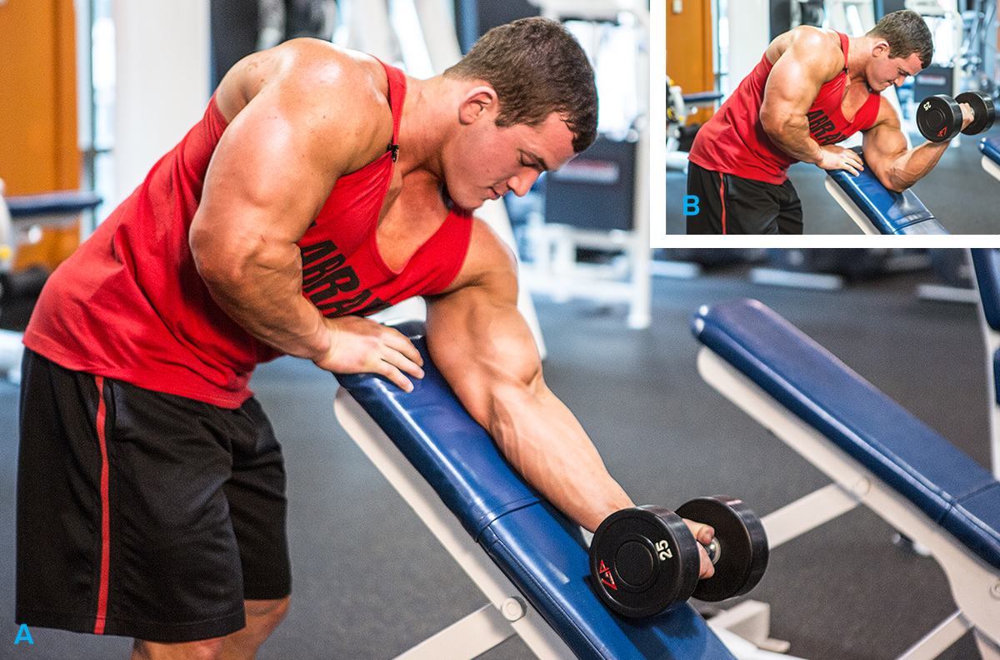
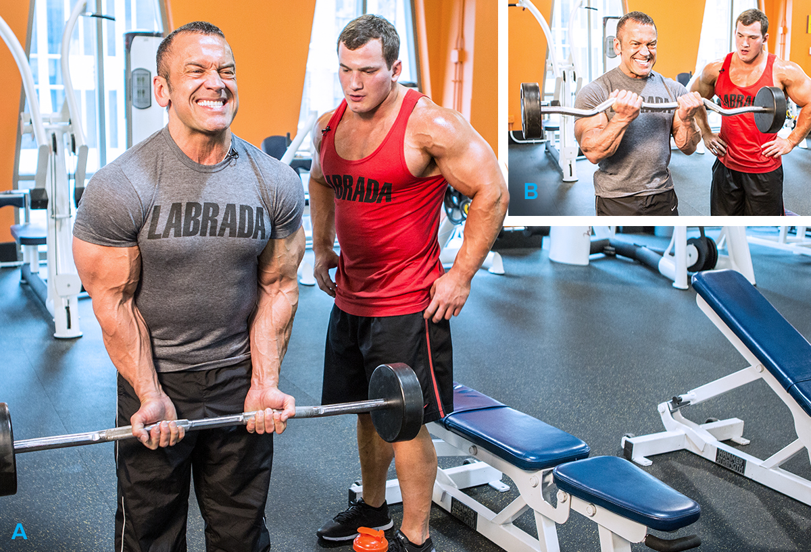

With coaches like Lee and Hunter Labrada, you'll get exactly what you need to add size and strength to your biceps and triceps. Here's their awesome arms workout!
You clicked on this article because you wanted to know how to grow your biceps and triceps. We want to show you how to do it. Let's go get pumped!
For this workout, we're going to be focusing on intensity. We're not training legs or any other huge body part, so the lifts themselves aren't really taxing. But we're going to increase the intensity by keeping the rest periods short.
We rest just as long for the other to complete the set, and then we get right back on the lift. We do this for a reason! You get more blood flow and a greater pump.
Although we're different people and are from different eras, we share some common philosophies in our training: We don't like to really lock out our movements so we can keep tension on the muscles, we like to use heavy weights and go to failure, and we like to keep our rest periods to a minimum.
To warm up, grab some lighter weight and knock out a warm-up set of 12-15 reps. Your hands should be lined up with the start of the knurling. Try not to lock out the joints at the top of the movement.
Whenever you're locked out, it puts the stress on the joints, not on the muscles. By keeping your joints bent, you'll keep constant stress on your triceps, which makes the exercise much harder.
We keep the weight a little lighter so we can do more reps and then get more blood into our triceps.
We use the E-Z bar to take a little stress off of your wrists. It's really important that you keep your elbows tucked and the movement slow and controlled. If your elbows are out, you'll use your shoulders instead of your triceps and set yourself up for an injury.
The focus of the workout is going to change a little bit now. Instead of going to failure, we focus on increasing the blood flow to the muscle and increasing the pump.
Do cable push-downs without the handle because it mimics the side triceps pose we do in competitions. You get some serious blood flow to your triceps and reinforce how to pose properly.
We want you to really exhaust the muscles during this exercise so you can get as much blood into them as you can before we move onto biceps. Turn your hands out at the end so you can get a really good contraction.
Do these properly: keep your elbows back and curl with your hands slightly out. We want your brachialis to contract as much as possible. Although we use dumbbells, try to curl with both hands at the same time. When you get too fatigued to curl with both hands at once, switch to alternating.
You get the most benefit out this exercise by doing it properly. If that means you have to lower the weight a little bit, do it. You'll get stronger in the exercise more quickly, likely stay injury-free, and it'll be a lot better for you in terms of results. Rotate your hands so they're supinated at the top of the exercise.
Normal preacher bench can hyperextend your elbows, which can cause injuries. So, we want to do this exercise on an incline bench. The pad of the bench actually acts as a safety stop, much like the safety bars on a squat rack.
Keep your elbows back and really squeeze at the top. You want to feel the contraction when your biceps are at the peak of the exercise. It will make a world of difference in your pump and the soreness you'll feel in the days after the workout.
Workouts like this will lend themselves to putting on mass, but the most important thing you can do is eat enough calories to support your muscle-building goals. You have to take in more calories than you expend every day. The only way to put on weight is to eat a surplus.